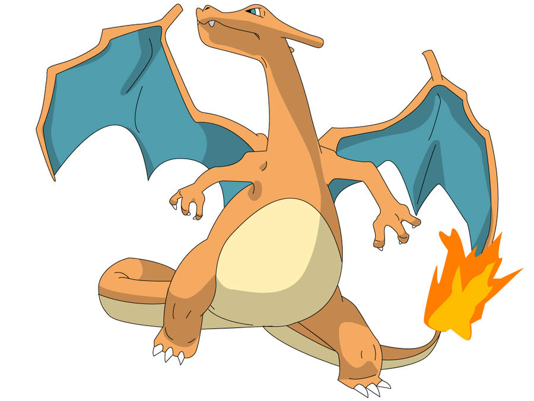

Charmander
Charmander es un pequeño lagarto bípedo. Sus características de fuego son resaltadas por su color de piel anaranjado y su cola con la punta envuelta en llamas. Charmander, como sus evoluciones Charmeleon y Charizard, tiene una pequeña llama en la punta de su cola.

Charmeleon
Charmeleon es un gran lagarto bípedo que, al igual que Charmander y Charizard, posee una llama en la punta de su cola. Esta refleja el estado físico y emocional del Pokémon. Si la llama se extingue, también lo hace la vida del mismo. El color de su piel y su llama son más oscuros que los de Charmander y Charizard.

Charizard
Su capacidad de vuelo supera la de un avión a reacción. Las llamas del interior de su cuerpo forman un torbellino que alcanza los 2000 °C. Al rugir aumenta todavía más su energía térmica. La energía del fenómeno Gigamax ha dotado a este Charizard de alas flamígeras y un enorme tamaño.
